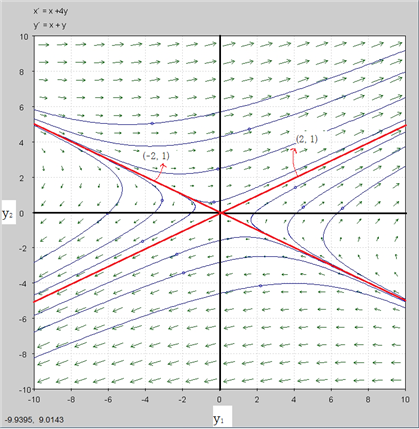
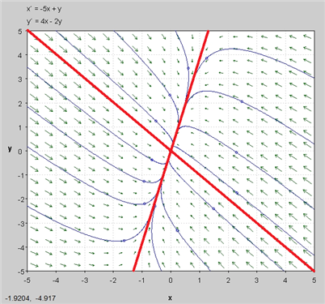
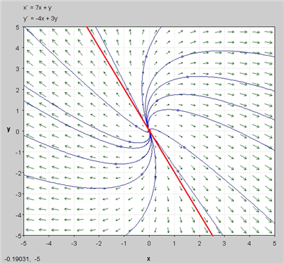
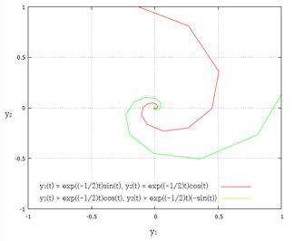
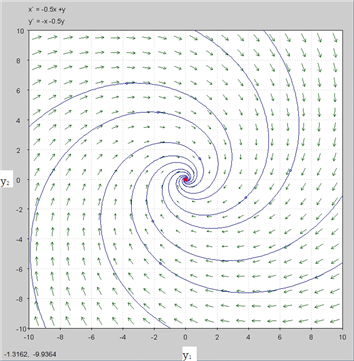
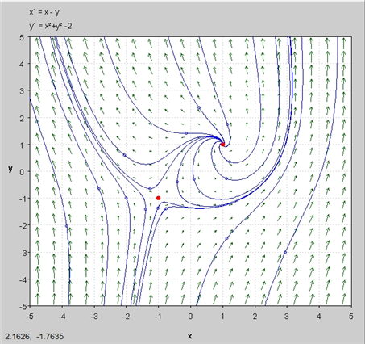

위상평면(phase plane)은 특정 미분방정식의 성질을 시각적으로 나타내는 좌표평면이다. 두 축에는 (x, y) 또는 (q, p)처럼 두 상태변수의 값을 놓으며, 일반적인 n차원 위상공간(phase space)의 2차원 경우에 해당한다.
위상평면법(phase plane method)은 미분방정식의 해에서 극한주기(limit cycle)의 존재 여부 등 동학적 특성을 그래프로 판별하는 방법을 말한다.[26]
중요한 것은 일반해를 모르더라도 A 행렬의 고유치와 고유벡터를 안다면 상변화도를 그릴 수 있다는 점이다. 따라서 상변화도는 미분방정식을 풀기 어려울 때 해의 특성을 파악하기 위해 많이 사용된다.[27]
예) 다음 연립미분방정식의 상변화도를 그려라.
(a) y ' _{1} \,=\,y_{1} +4y_{2}
y ' _{2} \,=\,y_{1} +y_{2}
(b) y ' _{1} \,=\,-5y_{1} +y_{2}
y ' _{2} \,=\,4y_{1} -2y_{2}
(c) y ' _{1} \,=\,7y_{1} +y_{2}
y ' _{2} \,=\,-4y_{1} +3y_{2}
(d) y ' _{1} \,=\,- \frac{1}{2} y_{1} +y_{2}
y ' _{2} \,=\,-y_{1} - \frac{1}{2} y_{2}
(풀이)
(a) 앞의 예에서 해는 다음과 같이 도출되었다.
{y_{1} (t} = {2c_{1} e^{3t} -2c_{2} e^{-}}
y_{2} (t)}} = c_{1} e^{3t} +c_{2} e^{-t}}}
이 함수는 t를 매개변수로 하는 함수이다.
이 함수의 상변화도는 다음과 같다.
c_{2} \,=\,0 라 하면 일반해는 y(t) = c_{1} e^{3t} \, {\begin{pmatrix}2 \\ 1\end{pmatrix}}
c_{1}는 고유벡터 \, {\begin{pmatrix}2 \\ 1\end{pmatrix}}의 크기와 부호를 결정하고, e^{3t}는 고유벡터 \, {\begin{pmatrix}2 \\ 1\end{pmatrix}}의 크기를 결정
the trajectory in this case will be a straight line that is parallel to the vector \, {\begin{pmatrix}2 \\ 1\end{pmatrix}}.
Also, since the exponential will increase as t increases and so in this case the trajectory will now move away from the origin as t increases.
If c_{1}>0, the trajectory will be in Quadrant II
if c_{1}<0, the trajectory will be in Quadrant IV.
So the line in the graph above marked with will be a sketch of the trajectory corresponding to c_{2} = 0 and this trajectory will approach the origin as t increases.
c_{1} \,=\,0 라 하면 일반해는 y(t) = c_{2} e^{-t} \, {\begin{pmatrix}-2 \\ \;1\end{pmatrix}}
If c_{1} = 0 we will have a trajectory that is parallel to \, {\begin{pmatrix}-2 \\ \;1\end{pmatrix}}.
Also notice that as t increases the exponential will get smaller and smaller and hence the trajectory will be moving in towards the origin.
c_{1} ,\;c_{2} 를 임의의 수라고 할 때 일반해는 c_{1} ,\;c_{2}의 선형결합으로 표시된다.
다양한 c_{1} ,\;c_{2}에 대한 그래프를 y_{1}, y_{2} 축에 표시하면 (그림)과 같다.[28]

the equilibrium solution (0,0) is called a saddle point(saddle path) and is unstable. unstable means that solutions move away from it as t increases.[29]
(b)

(c)

(d) 앞의 예에서
{\begin{pmatrix}\,- \frac{1}{2} & \,1 \\ -1 & \,- \frac{1}{2}\end{pmatrix}}의 고유치는 \lambda_{1} \,=\,- \frac{1}{2} +i , \lambda_{2} \,=\,- \frac{1}{2} -i
고유벡터는 p1= {\begin{pmatrix}1 \\ i\end{pmatrix}} b , p2= {\begin{pmatrix}\,1 \\ -i\end{pmatrix}} b
(i) c_{1} =c_{2} = \frac{1}{2} 로 설정하면
y1 = e^{- \frac{t}{2}}{\begin{pmatrix}\,\cos\,t\, \\ -\,\sin\,t\end{pmatrix}}
(ii) c_{1} =-c_{2} =- \frac{1}{2} i 로 설정하면
y2 = e^{- \frac{t}{2}}{\begin{pmatrix}\,\sin\,t\, \\ \cos\,t\end{pmatrix}}
\lim\limits_{t \to \infty } {rm} ity1 = {\begin{pmatrix}0 \\ 0\end{pmatrix}}} it , \lim\limits_{t \to \infty } {rm} ity2 = {\begin{pmatrix}0 \\ 0\end{pmatrix}}} it
따라서 t가 커짐에 따라 0에 수렴한다.
매개변수 방정식을 이용해서 위 함수를 그래프로 그리면 다음과 같다.

이로부터 우리는 상변화도가 나선형으로 (0, 0)에 수렴함을 알 수 있다.
다양한 c_{1} ,\,c_{2} 값을 대입함으로서 상변화도를 그릴 수 있다.
이 미분방정식의 상변화도는 다음 그림과 같다.

(풀이끝)
선형비동차연립미분방정식(Nonhomogeneous Linear Systems)
y’ = A(t)y+v(t) ...............①
Just as in the case a single nonhomogenous linear ODE, the general solution of ① will be of the form by superposition principle.
y(t) = yp(t) + yc(t)
where yp(t) is a particular solution of ① and yc(t) is the general solution of the corresponding homogeneous equation
y’ = A(t)y ................②
계수가 상수인 경우(Diagonalizable Systems with Constant Coecients)
y’ = Ay+v(t) ...............①
따라서 P-1AP = D, where P는 특성벡터로 구성된 행렬, D는 특성치로 구성된 대각행렬
①에 P-1를 전방곱하면
P-1y’ = P-1Ay+P-1v(t)................②
z(t)=P-1y(t) , h(t)=P-1v(t) 라 하면 ②는
P-1\frac{d}{dt}y = P-1APP-1y+h(t)
⇒ \frac{d}{dt}P-1y = Dz(t)+h(t)
⇒ z‘(t) = Dz(t) + h(t)
{\begin{pmatrix}\frac{dz_{1}}{dt} \\ \frac{dz_{2}}{dt}\end{pmatrix}} = {\begin{pmatrix}\lambda_{1} & 0 \\ 0 & \lambda_{2}\end{pmatrix}}{\begin{pmatrix}z_{1} (t) \\ z_{2} (t)\end{pmatrix}} + {\begin{pmatrix}h_{1} (t) \\ h_{2} (t)\end{pmatrix}}
∴ {\begin{pmatrix}z_{1} (t) \\ z_{2} (t)\end{pmatrix}} = {\begin{pmatrix}eqalign{e^{\lambda_{1} t} \int {e^{- \lambda_{1} t}} h_{1} (t)dt\,+\,c_{1} e^{\lambda_{1} t} \\ } \\ e^{\lambda_{2} t} \int {e^{- \lambda_{2} t}} h_{2} (t)dt\,+\,c_{2} e^{\lambda_{2} t}\end{pmatrix}}...........[30]
y(t) = Pz(t) 이므로
{\begin{pmatrix}y_{1} (t) \\ y_{2} (t)\end{pmatrix}} = (p1, p2){\begin{pmatrix}eqalign{e^{\lambda_{1} t} \int {e^{- \lambda_{1} t}} h_{1} (t)dt\,+\,c_{1} e^{\lambda_{1} t} \\ } \\ e^{\lambda_{2} t} \int {e^{- \lambda_{2} t}} h_{2} (t)dt\,+\,c_{2} e^{\lambda_{2} t}\end{pmatrix}} , pi 는 eigenvector
계수가 t의 함수인 경우(General Diagonalizable Systems)
y’(t) = A(t)y(t)+v(t)...............①
이의 일반해는 다음의 형태를 갖는다.[31]
yg = Λ(t)\intΛ-1(t)v(t)dt + Λ(t)c , where Λ(t)는 관련 동차 연립미분방정식의 해
즉, Λ(t) 는 y’c(t) = \frac{d}{dt}yc(t) = A(t)yc(t) 의 해(餘函數)
즉, yc(t) = Λ(t)
이 해는 앞에서 다음과 같이 구했다.
yc = Pz = (p1, ..., pn){\begin{pmatrix}c_{1} e^{\lambda_{1} t} \\ c_{2} e^{\lambda_{2} t} \\ \vdots \\ c_{n} e^{\lambda_{n} t}\end{pmatrix}} = \sum\limits_{i=1}^{n} c_{i} e^{\lambda_{i} t}pi
이는 다시 쓰면
yc(t) = (e^{\lambda_{1} t}p1, ..., e^{\lambda_{n} t}pn) = (e^{\lambda_{1} t}, ..., e^{\lambda_{n} t})P = Λ(t)
Λ(t)를 여함수 행렬이라고 한다.
yc(t) = Λ(t) 에서
⇒ \frac{d}{dt}yc(t) = A(t)yc(t)
⇒ \frac{d}{dt}Λ(t) = A(t)Λ(t)
이제 위 일반해(yg)가 ①의 해인가를 검증하기 위해 벡터 yg를 미분하면
\frac{d}{dt}yg = \left( \begin{matrix} \\ \end{matrix} \right.\frac{d}{dt}Λ(t)\left. \begin{matrix} \\ \end{matrix} \right)\intΛ-1(t)v(t)dt + Λ(t)\frac{d}{dt}\left( \begin{matrix} \\ \end{matrix} \right.\intΛ-1(t)v(t)dt\left. \begin{matrix} \\ \end{matrix} \right)+ \frac{d}{dt}Λ(t)c
= A(t)Λ(t)\intΛ-1(t)v(t)dt + Λ(t)Λ-1(t)v(t)+ A(t)Λ(t)c , (∵\frac{d}{dt}\left( \begin{matrix} \\ \end{matrix} \right.\intΛ-1(t)v(t)dt\left. \begin{matrix} \\ \end{matrix} \right) = Λ-1(t)v(t))
= A(t)Λ(t)\intΛ-1(t)v(t)dt + v(t)+ A(t)Λ(t)c
= A(t)\left( \begin{matrix} \\ \end{matrix} \right.Λ(t)\intΛ-1(t)v(t)dt + Λ(t)c\left. \begin{matrix} \\ \end{matrix} \right) + v(t)
= A(t)yg + v(t)
즉, \frac{d}{dt}yg = y‘g = A(t)yg + v(t)
따라서 yg가 ①의 일반해임이 증명
예) 다음 연립미분방정식의 일반해를 구하라
y ' _{1} =2y_{1} -y_{2} +e^{t}
y ' _{2} =3y_{1} -2y_{2} +e^{-t}
(풀이)
행렬 형태로 고치면
y’(t) = Ay(t)+v(t)
{\begin{pmatrix}\frac{dy_{1}}{dt} \\ \frac{dy_{2}}{dt}\end{pmatrix}} = {\begin{pmatrix}2 & \,-1 \\ 3 & \,-2\end{pmatrix}}{\begin{pmatrix}y_{1} (t) \\ y_{2} (t)\end{pmatrix}} + {\begin{pmatrix}e^{t} \\ e^{-t}\end{pmatrix}}
where y’(t) = {\begin{pmatrix}\frac{dy_{1}}{dt} \\ \frac{dy_{2}}{dt}\end{pmatrix}} , A = {\begin{pmatrix}2 & \,-1 \\ 3 & \,-2\end{pmatrix}} , y(t) = {\begin{pmatrix}y_{1} (t) \\ y_{2} (t)\end{pmatrix}} , v(t) = {\begin{pmatrix}e^{t} \\ e^{-t}\end{pmatrix}}
방법1)
{\begin{pmatrix}y' _{1} \\ y' _{2}\end{pmatrix}} = {\begin{pmatrix}2 & \,-1 \\ 3 & \,-2\end{pmatrix}}{\begin{pmatrix}y_{1} \\ y_{2}\end{pmatrix}} + {\begin{pmatrix}e^{t} \\ e^{-t}\end{pmatrix}}
고유치는
\phi ( \lambda )= \lambda^{2} -1=0
THEREFORE \, \lambda_{1} =1,\; \lambda_{2} =-1
고유벡터는
(A-λI)p=0 에서
ⅰ) λ=1
{\begin{pmatrix}2-1 & \,-1 \\ 3 & \,-2-1\end{pmatrix}} \,p1 = \, {\begin{pmatrix}1 & \,-1 \\ 3 & \,-3\end{pmatrix}}p1
∴ p1 = {\begin{pmatrix}1 \\ 1\end{pmatrix}}t
ⅱ) λ=-1
{\begin{pmatrix}2+1 & \,-1 \\ 3 & \,-2+1\end{pmatrix}} \,p2 = \, {\begin{pmatrix}3 & \;-1 \\ 3 & \;-1\end{pmatrix}}p2
∴ p2 = {\begin{pmatrix}1 \\ 3\end{pmatrix}}t
따라서 고유벡터들로 이루어진 대각화 만드는 행렬은
P = \, {\begin{pmatrix}1 & \;1 \\ 1 & \;3\end{pmatrix}}
P-1u(t) = \, {\begin{pmatrix}1 & \;1 \\ 1 & \;3\end{pmatrix}}^{-1}{\begin{pmatrix}e^{t} \\ e^{-t}\end{pmatrix}} = \frac{1}{2}{\begin{pmatrix}\,3 & \,-1 \\ -1 & \;1\end{pmatrix}}{\begin{pmatrix}e^{t} \\ e^{-t}\end{pmatrix}} = \frac{1}{2}{\begin{pmatrix}3e^{t} -e^{-t} \\ -e^{t} +e^{-t}\end{pmatrix}} \,= {\begin{pmatrix}g_{1} \\ g_{2}\end{pmatrix}} \,
∴ z = {\begin{pmatrix}\frac{1}{2} e^{t} \int {e^{-t} (3e^{t} -e^{-t} )dt\,+c_{1} e^{t}} \\ \, \frac{1}{2} e^{-t} \int {e^{t} (-e^{t} +e^{-t}} )dt\,+c_{2} e^{-t}\end{pmatrix}}
= {\begin{pmatrix}\frac{1}{2} e^{t} \int {(3-e^{-2t} )dt\,+c_{1} e^{t}} \\ \, \frac{1}{2} e^{-t} \int {(-e^{2t} +1} )dt\,+c_{2} e^{-t}\end{pmatrix}}
= {\begin{pmatrix}\frac{1}{2} e^{t} \,(3t+ \frac{1}{2} e^{-2t} )+c_{1} e^{t} \\ \, \frac{1}{2} e^{-t} \,(- \frac{1}{2} e^{2t} +t)+c_{2} e^{-t}\end{pmatrix}}
= {\begin{pmatrix}e^{t} \,( \frac{3}{2} t+ \frac{1}{4} e^{-2t} )+c_{1} e^{t} \\ \,e^{-t} \,(- \frac{1}{4} e^{2t} + \frac{1}{2} t)+c_{2} e^{-t}\end{pmatrix}}
y(t) = \, {\begin{pmatrix}1 & \;1 \\ 1 & \;3\end{pmatrix}}{\begin{pmatrix}e^{t} \,( \frac{3}{2} t+ \frac{1}{4} e^{-2t} )+c_{1} e^{t} \\ \,e^{-t} \,(- \frac{1}{4} e^{2t} + \frac{1}{2} t)+c_{2} e^{-t}\end{pmatrix}}
= {\begin{pmatrix}e^{t} \,( \frac{3}{2} t+ \frac{1}{4} e^{-2t} )+\,e^{-t} \,(- \frac{1}{4} e^{2t} + \frac{1}{2} t)+c_{1} e^{t} +c_{2} e^{-t} \begin{matrix}pile{ \\ } \\ \end{matrix} \\ \,e^{t} \,( \frac{3}{2} t+ \frac{1}{4} e^{-2t} )+3e^{-t} \,(- \frac{1}{4} e^{2t} + \frac{1}{2} t)++c_{1} e^{t} +3c_{2} e^{-t} \begin{matrix}pile{ \\ } \\ \end{matrix}\end{pmatrix}}
방법2)
A(t) 가 t의 함수일 때의 일반화 공식을 써도 된다.
여함수를 구하기 위해 다음 동차 연립미분방정식을 푼다.
{\begin{pmatrix}\frac{dy_{1}}{dt} \\ \frac{dy_{2}}{dt}\end{pmatrix}} = {\begin{pmatrix}2 & \,-1 \\ 3 & \,-2\end{pmatrix}}{\begin{pmatrix}y_{1} (t) \\ y_{2} (t)\end{pmatrix}}
앞의 예에서 고유치, 고유벡터는
λ=1, p1 = {\begin{pmatrix}1 \\ 1\end{pmatrix}}
λ=-1, p2 = {\begin{pmatrix}1 \\ 3\end{pmatrix}}
따라서 여함수 행렬은
yc(t) = (e^{\lambda_{1} t}p1, ..., e^{\lambda_{n} t}pn) = (e^{\lambda_{1} t}, ..., e^{\lambda_{n} t})P = Λ(t)
yc(t) = Λ(t) = (e^{t}, e^{-t}){\begin{pmatrix}1 & \,1 \\ 1\, & \,3\end{pmatrix}} = {\begin{pmatrix}e^{t} & \;e^{-t} \\ e^{t} \, & \,3e^{-t}\end{pmatrix}} ............①
Λ-1(t) = {\begin{pmatrix}e^{t} & \;e^{-t} \\ e^{t} \, & \,3e^{-t}\end{pmatrix}}^{-1} = \frac{1}{2}{\begin{pmatrix}3e^{-t} & \;-e^{-t} \\ -e^{t} \, & \,e^{t}\end{pmatrix}} ....................②
yg = Λ(t)\intΛ-1(t)v(t)dt + Λ(t)c 에 ①, ②를 대입하면
= {\begin{pmatrix}e^{t} & \;e^{-t} \\ e^{t} \, & \,3e^{-t}\end{pmatrix}}\int\frac{1}{2}{\begin{pmatrix}3e^{-t} & \;-e^{-t} \\ -e^{t} \, & \,e^{t}\end{pmatrix}}{\begin{pmatrix}e^{t} \\ e^{-t}\end{pmatrix}} + {\begin{pmatrix}e^{t} & \;e^{-t} \\ e^{t} \, & \,3e^{-t}\end{pmatrix}}{\begin{pmatrix}c_{1} \\ c_{2}\end{pmatrix}}
= {\begin{pmatrix}\frac{1}{4} e^{t} (6t+e^{-2t} -1+2te^{-2t} ) \\ \frac{1}{4} e^{t} (6t+e^{-2t} -3+6te^{-2t} )\end{pmatrix}} + {\begin{pmatrix}c_{1} e^{t} +c_{2} e^{-t} \\ c_{1} e^{t} +3c_{2} e^{-t}\end{pmatrix}}
(풀이끝)
Now let us consider the nonhomogeneous system
Where b is a constant vector. The system above is explicitly:
x1′ = a x1 + b x2 + g1
x2′ = c x1 + d x2 + g2
As before, we can find the critical point by setting x1′ = x2′ = 0 and solve the resulting nonhomgeneous system of algebraic equations. The origin will no longer be a critical point, since the zero vector is never a solution of a nonhomogeneous linear system. Instead, the unique critical point (as long as A has nonzero determinant, there remains exactly one critical point) will be located at the solution of the system of algebraic equations:
0 = a x1 + b x2 + g1
0 = c x1 + d x2 + g2
Once we have found the critical point, say it is the point (x1, x2) = (α, β), it then could be moved to (0, 0) via the translations χ1 = x1 − α and χ2 = x2 − β.
The result after the translation would be the homogeneous linear system
χ ′ = Aχ.
The two systems (before and after the translations) have the same coefficient matrix.* Their respective critical points will also have identical type and stability classification. Therefore, to determine the type and stability of the critical point of the given nonhomogeneous system, all we need to do is to disregard b, then take its coefficient matrix A and use its eigenvalues for the determination, in exactly the same way as we would do with the corresponding homogeneous system of equations.
Suppose (x1, x2) = (α, β) is the critical point of the system. That is
0 = a α + b β + g1
0 = c α + d β + g2
Now apply the translations χ1 = x1 − α and χ2 = x2 − β.
We see that
x1 = χ1 + α, x2 = χ2 + β, χ1′ = x1′, and χ2′ = x2′.
Substitute them into the system x′ = Ax + b:
x1′ = χ1′ = a x1 + b x2 + g1 = a(χ1 + α) + b(χ2 + β) + g1
= a χ1 + b χ2 + (a α + b β + g1) = a χ1 + b χ2
x2′ = χ2′ = c x1 + d x2 + g2 = c(χ1 + α) + d(χ2 + β) + g2
= c χ1 + d χ2 + (c α + d β + g2) = c χ1 + d χ2
That is, with the new variables χ1 and χ2 the given system has become
χ1′ = a χ1 + b χ2
χ2′ = c χ1 + d χ2
Notice it has the form χ ′ = Aχ. That is, it is a homogeneous system (with the critical point at the origin) whose coefficient matrix is exactly A, the same as the original system’s. Hence, b could be disregarded, and a determination of the type and stability of the critical point of the system (with or without the translations) could be based solely on the coefficient matrix A.
비선형 연립미분방정식(nonlinear differential equation systems)
비선형 연립미분방정식의 경우 직접적으로 미분방정식의 해를 구할 수 없는 경우가 대부분이다. 따라서 상변화도를 그려 해의 모양을 추측한다. 또한 컴퓨터를 이용한 수치분석을 통해 해의 모양을 도출한다.
변수 2개, 함수 2개인 경우
y ' _{1} (t)\,=\,f_{1} (y_{1} ,\,y_{2} )
y ' _{2} (t)\,=\,f_{2} (y_{1} ,\,y_{2} )
Like a linear system, the critical points are found by setting y ' _{1} (t)\,=\,y' _{2} (t)\,=\,0, and solve the resulting system
\,f_{1} (y_{1} ,\,y_{2} )\,=\,0
\,f_{2} (y_{1} ,\,y_{2} )\,=\,0
Unlike a linear system, a nonlinear system could have none, one, two, three, or any number of critical points.
Since there might be multiple critical points present on the phase portrait, each trajectory could be influenced by more than one critical point.
the type and stability of each critical point need to be determined locally (in a small neighborhood on the phase plane around the critical point in question) on a case–by- case basis.
We will approximate the behavior of the nearby trajectories using the linearizations (i.e. the tangent approximations) of f_{1} and f_{2} about each critical point. This converts the nonlinear system into a linear system whose phase portrait approximates the local behavior of the original nonlinear system near the critical point.
start with the lineariztions of f_{1} and f_{2} such a linearization is just the 3 lowest order terms in the Taylor series expansion of each function) about the critical point \,(y_{1} ,\,y_{2} )\, = (α, β).
y ' _{1} (t)\,=\,f_{1} (y_{1} ,\,y_{2} ) \approx f_{1} ( \alpha ,\, \beta )+ \frac{\partial f_{1}}{\partial y_{1}} (y_{1} - \alpha )+ \frac{\partial f_{1}}{\partial y_{2}} (y_{2} - \beta )
y ' _{2} (t)\,=\,f_{2} (y_{1} ,\,y_{2} ) \approx f_{2} ( \alpha ,\, \beta )+ \frac{\partial f_{2}}{\partial y_{1}} (y_{1} - \alpha )+ \frac{\partial f_{2}}{\partial y_{2}} (y_{2} - \beta )
But since (α, β) is a critical point, so f_{1}(α, β) = 0 = f_{2}(α, β), the above
linearizations become
y ' _{1} (t)\, \approx \frac{\partial f_{1}}{\partial y_{1}} (y_{1} - \alpha )+ \frac{\partial f_{1}}{\partial y_{2}} (y_{2} - \beta )
y ' _{2} (t)\, \approx \frac{\partial f_{2}}{\partial y_{1}} (y_{1} - \alpha )+ \frac{\partial f_{2}}{\partial y_{2}} (y_{2} - \beta )
As before, the critical point could be translated to (0, 0) and still retains its
type and stability, using the substitutions χ = x − α and γ = y − β. After the
translation, the approximated system becomes
y ' _{1} (t)\,= \frac{\partial f_{1}}{\partial y_{1}} y_{1} + \frac{\partial f_{1}}{\partial y_{2}} y_{2}
y ' _{2} (t)\,= \frac{\partial f_{2}}{\partial y_{1}} y_{1} + \frac{\partial f_{2}}{\partial y_{2}} y_{2}
행렬형태로 고치면
{\begin{pmatrix}\frac{dy_{1}}{dt} \\ \frac{dy_{2}}{dt}\end{pmatrix}} = {\begin{pmatrix}\frac{\partial f_{1}}{\partial y_{1}}&\frac{\, \partial f_{1}}{\partial y_{2}} \\ \frac{\partial f_{2}}{\partial y_{1}}&\, \frac{\partial f_{2}}{\partial y_{2}}\end{pmatrix}}{\begin{pmatrix}y_{1} (t) \\ y_{2} (t)\end{pmatrix}}
It is now a homogeneous linear system with a coefficient matrix
J = {\begin{pmatrix}\frac{\partial f_{1}}{\partial y_{1}}&\frac{\, \partial f_{1}}{\partial y_{2}} \\ \frac{\partial f_{2}}{\partial y_{1}}&\, \frac{\partial f_{2}}{\partial y_{2}}\end{pmatrix}}
That is, it is a matrix calculate by plugging in x = α and y = β into the matrix
of first partial derivatives. This matrix of first partial derivatives, J, is often called the Jacobian matrix.
It just needs to be calculated once for each nonlinear system. For each critical point of the system, all we need to do is to compute the coefficient matrix of the linearized system about the given critical point (x, y) = (α, β), and then use its eigenvalues to determine the (approximated) type and stability.
예)
y' _{1} \,=y_{1} \,-\,y_{2} \,
y ' _{2} \,=y_{1}^{2} \,+\,y_{2}^{2} \,-2\,
(풀이)
임계점은
y ' _{1} \,=y_{1} \,-\,y_{2} \,=\,0
y ' _{2} \,=y_{1}^{2} \,+\,y_{2}^{2} \,-2\,=\,0
y_{1} \,=\,y_{2} \,=\,1, y_{1} \,=\,y_{2} \,=\,-1
jacobian은
J = {\begin{pmatrix}1 & -1 \\ 2y_{1} & \,2y_{2}\end{pmatrix}}
(i) y_{1} \,=\,y_{2} \,=\,1 을 대입하면
A = {\begin{pmatrix}1 & -1 \\ 2 & \,2\end{pmatrix}}
고유치는
\phi ( \lambda )= \lambda^{2} -3 \lambda +4=0
∴ \lambda \,=\, \frac{3\pm i \sqrt {7}}{2}
실수부의 수가 3 > 0, 따라서 임계점은 불안정하고 해는 발산한다. 또한 특성근이 복소수이므로 해는 나선형으로 발산한다.
(ii) y_{1} \,=\,y_{2} \,=\,-1 을 대입하면
A = {\begin{pmatrix}1 & \,-1 \\ -2 & \,-2\end{pmatrix}}
고유치는
\phi ( \lambda )= \lambda^{2} + \lambda -4=0
∴ \lambda_{1} \,=\, \frac{-1+ \sqrt {17}}{2} \,>\,0 , \lambda_{2} \,=\, \frac{-1- \sqrt {17}}{2} \,<\,0
따라서 임계점은 불안정하고 해는 안장경로를 따라 발산한다.

‘대각행렬화’ 참조
↩고유치가 중근인 경우 고유벡터의 개수가 n보다 작을 수 있다. 이런 경우는 고유벡터의 역함수를 구할 수 없으므로 일반적인 방법으로 jordan canonical form으로 변형하여 해를 구한다. 자세한 설명은 http://www.math24.net/construction-of-the-general-solution-of-a-system-of-differential-equations-using-the-jordan-form.html 참조.
↩미분방정식에서 시간변수 t가 독립항으로 존재하지 않을 경우를 자율시스템이라고 한다.
↩‘매개변수방정식’ 참조
↩정확하게는 원형일 수도 있고, 타원형일 수도 있고, 모서리가 부드러운 삼각형일 수도 있다.
↩{\begin{pmatrix}\,-i & \;1 \\ -1 & \,-i\end{pmatrix}}{\begin{pmatrix}\,a \\ b\end{pmatrix}} = 0 ⇒ {\begin{pmatrix}\,-ai+b \\ -a-bi\end{pmatrix}} = {\begin{pmatrix}0 \\ 0\end{pmatrix}} ⇒ ai=b and a=-bi
ai=b 이면 {\begin{pmatrix}\,a \\ b\end{pmatrix}} = {\begin{pmatrix}\,a \\ ai\end{pmatrix}} = {\begin{pmatrix}\,1 \\ i\end{pmatrix}} a , a=-bi 이면 {\begin{pmatrix}\,a \\ b\end{pmatrix}} = {\begin{pmatrix}\,-bi \\ b\end{pmatrix}} = {\begin{pmatrix}\,b \\ bi\end{pmatrix}} = {\begin{pmatrix}\,1 \\ i\end{pmatrix}} b
∴ 고유벡터는 p1= {\begin{pmatrix}1 \\ i\end{pmatrix}} b
↩(-ic_{2} ) \times (-i\,sint)\,=i^{2} c_{2} \,sint\,=\,-c_{2} \,sint\,
↩http://tutorial.math.lamar.edu/Classes/DE/PhasePlane.aspx
↩http://en.wikipedia.org/wiki/Phase_plane
↩경제학에서 사용하는 위상도(phase diagram)은 약간 다른 방법으로 접근한다. 구체적인 내용과 상변화도와의 비교는 위상도 참조.
↩그림은 matlab의 온라인 자바버전으로 그렸다. http://math.rice.edu/~dfield/dfpp.html
↩http://tutorial.math.lamar.edu/Classes/DE/RealEigenvalues.aspx
↩\frac{dy}{dt} +u(t)y=v(t) 의 해는 y(t)=\,e^{- \int {udt}} \int {v(t)e^{ \int {udt}}} dt\,+Ce^{- \int {udt}}
↩단일 방정식의 경우 (주 24)의 일반해와 비교
↩http://www.math.psu.edu/tseng/class/Math251/Notes-PhasePlane.pdf
↩http://tutorial.math.lamar.edu/Classes/DE/PhasePlane.aspx
↩http://en.wikipedia.org/wiki/Phase_plane
↩경제학에서 사용하는 위상도(phase diagram)은 약간 다른 방법으로 접근한다. 구체적인 내용과 상변화도와의 비교는 위상도 참조.
↩그림은 matlab의 온라인 자바버전으로 그렸다. http://math.rice.edu/~dfield/dfpp.html
↩http://tutorial.math.lamar.edu/Classes/DE/RealEigenvalues.aspx
↩\frac{dy}{dt} +u(t)y=v(t) 의 해는 y(t)=\,e^{- \int {udt}} \int {v(t)e^{ \int {udt}}} dt\,+Ce^{- \int {udt}}
↩단일 방정식의 경우 (주 24)의 일반해와 비교
↩http://www.math.psu.edu/tseng/class/Math251/Notes-PhasePlane.pdf
↩← 대각행렬화와 고유치 · 절별 목차 · 끝 →